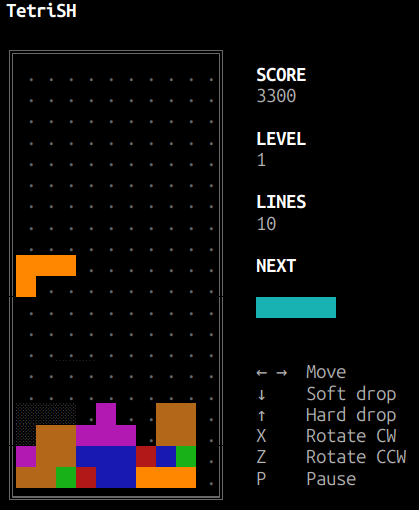

Pure Bash
One readable script. No game engine, build step, or package manager required on Linux.
MADE FOR THE TERMINAL
Give your terminal a little playtime. Classic falling blocks, written in Bash. Just download, run, and chase that next four-line clear.
Linux · macOS with modern Bash · One script

SMALL SCRIPT. CLASSIC GAME.
One readable script. No game engine, build step, or package manager required on Linux.
Seven pieces. A 10 × 20 board. Classic line-clear scoring and faster drops every ten lines.
A next-piece preview and landing ghost help you find a home for every block.
Soft and hard drops, rotation in both directions, and a pause when real work calls.
FROM GITHUB TO YOUR TERMINAL
Download directly from the repository. The game runs locally in your terminal.
Use an ANSI-compatible terminal with Bash 4+ and stty. Bash 5+ is recommended for smooth timing. You’ll also need curl for the download.
curl -fL https://raw.githubusercontent.com/Costa365/tetrish/main/tetrish -o tetrish
chmod +x tetrish
./tetrishCheck your version with bash --version. Run these commands in a folder where you want to keep the game.
Install Homebrew first, then install modern Bash. Run the game explicitly with Homebrew’s Bash to get accurate timing.
brew install bash
curl -fL https://raw.githubusercontent.com/Costa365/tetrish/main/tetrish -o tetrish
"$(brew --prefix)/bin/bash" ./tetrishWorks with the Homebrew paths for both Apple Silicon and Intel Macs. macOS’s bundled Bash is too old for this script. These instructions have not yet been tested on a Mac.
git clone https://github.com/Costa365/tetrish.git
cd tetrish
./tetrishOn macOS, install Bash with Homebrew and replace the last line with "$(brew --prefix)/bin/bash" ./tetrish. To update a clone, run git pull from its folder. For a direct download, repeat the download command.
Windows users can try the Linux instructions inside WSL; native Windows terminals are not supported. WSL has not yet been tested.
YOUR KEYBOARD IS THE CONTROLLER
Clear complete rows to score points. Stack to the top and it’s game over.
One script. Seven shapes. A well-earned break.
See you in the terminal ↗